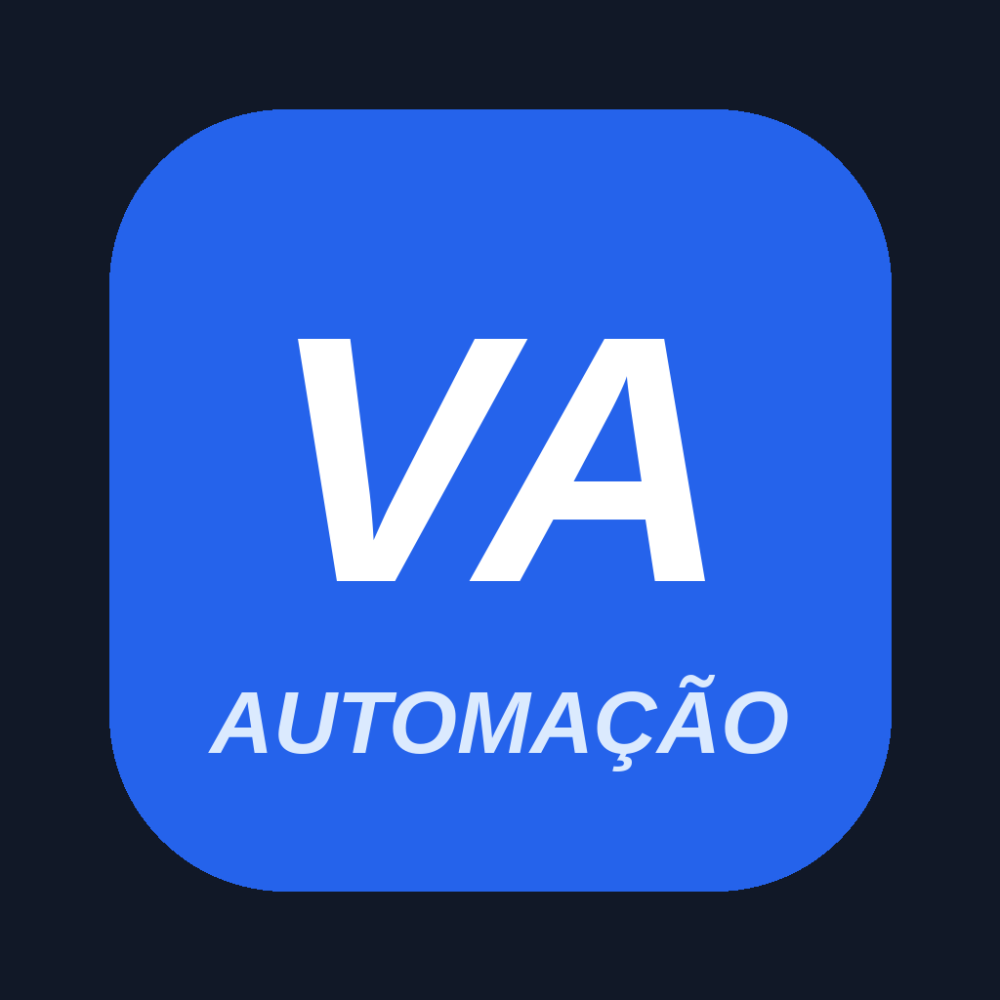

Varela Automação is a content-management tool that lets creators and authorized business clients schedule and publish their own short videos to TikTok and Instagram from a single dashboard. Users connect their TikTok account via TikTok Login Kit, review the caption and privacy settings, and publish through the official TikTok Content Posting API.
Varela Automação é uma ferramenta de gestão de conteúdo que permite a criadores e clientes autorizados agendar e publicar seus próprios vídeos no TikTok e Instagram a partir de um único painel.
Terms of Service · Privacy Policy
Contact: diogovarela.representacoes@gmail.com